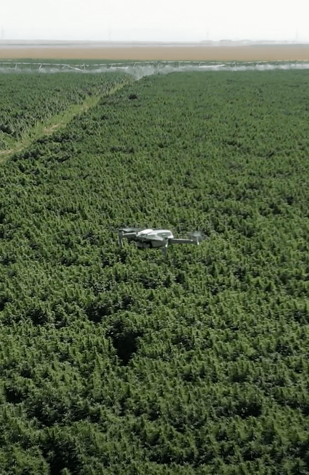
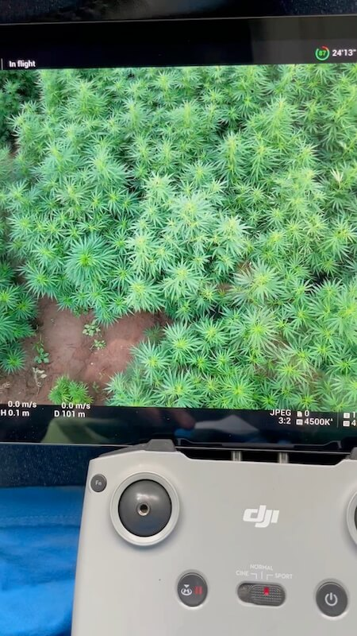
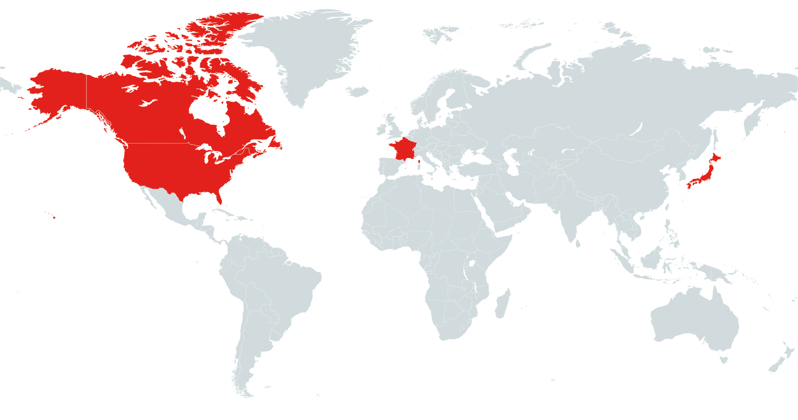

Skysense is the world's first provider of AI-powered crop diagnostics for hemp, working with some of America's largest and fastest growing hemp farms and CBD extractors.
Backed by an unparalleled combination of experience with hemp and AI research, we deliver innovative data solutions that assist in crop stress mapping, eradicating male plants quickly, compliant harvest planning, weed management, irrigation management, and more.
Hemp farmers seek to have as many female plants in their crop as possible, since this leads to higher flower density, which in turn leads to a higher yield with a more productive and higher revenue-generating crop.
“A needle in a haystack. We are typically looking for 1 male plant for every 10,000 plants in your field. This is a lot of work and it can have staggering costs for large hemp farms.”
Because male plants reduce the yield, it is essential to remove them as quickly as possible. Even a single male among thousands of female plants can have a large impact. Besides, the reproductive stages are very variable so regular checks have to be done during this 4-8 week flowering period.
Powered by drones for increased efficiency and AI for precision detection of male hemp plants. Our services are personalized and specifically tailored to your farm’s needs.
Skysense's HempScouter is a collection of hardware and software to solve the male hemp problem. Combining drones with our custom developed pilot and roguing apps, you can detect male hemp plants in real-time, and stream the map locations directly to your roguing team working in the field.
Skysense HempScouter compatible drones are designed to fly low and slow to efficiently detect male hemp plants.
Our Pilot App provides flight control, automated flying, male hemp plant detection, and live real-time mapping.
Uinsg a GPS enabled smartphone, our Rouging App shows male hemp plant locations in on a map, updated in real-time.
Backed by an extensive and experienced pilot network, we can provide services all over the United States, North America, and abroad. Many of our existing customers are based in some of the largest and fastest growing hemp growing states in the United States, such as California, Nevada and Oregon.
Skysense empowers farmers to revolutionize agriculture by combining scientific imaging from above with artificial intelligence to quickly reveal critical insights that unlock new value.
Learn more...Skysense HempScouter uses drones to survey your fields from above, combined with state-of-the-art AI technology to pinpoint the locations of male hemp plants.
We combine low-altitude flight patterns, high resolution cameras, and AI to capture the details needed to identify male hemp plants in real-time, resulting in a solution that’s 10 times more effective than a traditional roguing crews walking up and down the rows of your fields, with the ability to cover up to 150-300 acres per day.
Given the variability in the reproductive stages of male hemp plants we recommend performing weekly flights during the flowering stages of your crop, in order to find and remove male hemp plants as soon as possible.
Male hemp plants are typically removed by a “roguing” team, identifying and removing the unwanted male hemp plants. Traditionally, they would walk the field and carefully cut and remove any male hemp plants that they find. For large farms, this typically means hiring a large team, which takes a lot of time, and results in high labor costs.
With the Skysense HempScouter solution we can both increase your efficiency and reduce your labor costs by significantly reducing the size of your roguing team. With HempScouter you can be as effective as 10 individual roguers.
Instead of manually hand-roguing the male hemp plants, HempScouter uses AI-powered drones to quickly and efficiently identify male hemp plants over large farms. The locations of the unwanted plants are then transmitted in real-time to a roguing team so that they can directly navigate to the unwanted plants and remove them.
With the Skysense HempScouter solution we can either provide a full-service solution where we rogue the fields for you. Alternatively, if you already have a roguing team or would like to perform the task yourself.
No. Other drone solutions typically require high-speed internet and mobile data coverage in order to upload large amounts of drone images for processing. However, our solution performs all processing on site in real-time.
Some features, such as Real-time Mapping of detected male hemp plants does require the drone pilot to have internet access. However, this feature is optional. Furthermore, if roguing crews have internet access then they can view male hemp plant locations in real-time on their smartphone via our HempRogueing app.
If your farm doesn’t have internet access, then the male hemp plant locations will be synced from the pilot’s app as soon as the pilot returns to an area with internet access. Roguing crews can then access the plant locations and plan their roguing strategy before returning to the fields.
Our self-service solution is designed for farmers who want to fly their own drones.
For our full-service solution we will bring all of the equipment that we need, including drones. For our self-service solution you can either lease a drone from us or we can help you purchase your own drone, which might be a more cost-effective option in the long run. The cost of one drone is roughly $2000 (including airframe, batteries, and flight control applications).
Get in touch or speak to sales to learn more about HempScouter.
Contact us